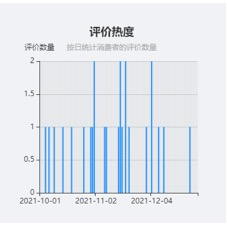

四川宜宾屏山桠橙2021年第四季度电商销售白皮书
2021年第四季度，国内柑橘市场整体较弱，10月起大量水果类产品涌入市场，我国柑橘类水果种植规模较大价格普遍较低、竞品较多，且上市时间较长约从每年10月持续到次年3月，因此第四季度整体较当年其他时间段热度有所上涨，但较其他类水果销量而言消费热度较低；此外受电商促销节等活动热度影响，11月销量较为集中，电商节热度结束后销量回落。
一、
四川宜宾屏山2021第四季度日消费热度和消费评价概况度
1.消费热度：每日用户评论数量基本稳定在0-2条，整体消费热度较低

2021年第四季度四川宜宾屏山桠橙的消费热度呈现较为稳定的态势，整体消费热度较低。11月消费者总评论数量显著多于10月及12月，11月中旬评价热度集中，此后消费热度有所减弱，12月中下旬仅有1条评论。11月中旬正值各大电商平台促销节庆活动，电商平台整体关注热度较高，因此11月中旬销量较为集中，电商热度过后，12月销量回落。相较21年其他季度而言，第四季度销量有所上涨，可能是因为桠橙应季落果期从10月开始，第四季度为应季水果且供应量较大，因此第四季度消费热度上涨。
2.消费评价：每日用户评价均分大于4，整体消费评价处于较高水平
2021年第四季度，消费者对四川宜宾屏山桠橙的日评价均分大于4分，5分评价占比较大，第四季度整体消费评价处于较高水平，可见消费者对四川宜宾屏山桠橙认可度较高，产品购买体验良好。
3.同期对比：同比消费热度有所提升，消费评价满意度从两极分化到较为稳定
对比上年同期数据可以发现，2020年第四季度的日评价数量在0-1之间波动且总数量极少，而2021年第四季度的日评价数量在0-2之间波动，整体评论数量有较为明显的上涨但总体数量仍较少，可见本产品市场热度相比去年同期有所提升但热度仍旧较低；从消费评价来看，相比2020年第四季度，2021年第四季度消费者打出了更多的5分，1分评价占比减少，另有部分消费者打出3分的中等评分，整体平均分从3分上涨至4分以上，可见四川宜宾屏山桠橙不断优化升级，获得了消费者更为满意的评价。
二、
四川宜宾屏山桠橙2021年第四季度消费者整体满意度分析
1.用户满意度概况：约七成的用户持”非常满意“态度，消费者整体满意度较高
68%的消费者对四川宜宾屏山桠橙的评价是非常满意，可见消费者对本产品的满意度和认可度较高，但有16%的消费者对产品非常不满意。
2.用户评价概况：口感和物流是消费者关注和评价的侧重点，其次是包装、品质、分量、价格等因素。
41.18%的评价与口感有关，可见对于本产品，消费者对口感这一产品元素的感知明显，另有29.41%的评价与物流有关，可见对于本产品，消费者更关注物流服务质量及物流速度；其次14.71%及8.82%的评价分别与包装及品质有关，再者为分量及价格因素。评价类别出现频次越高则表明消费者对其越为关注，可对高频次评价类别如包装进行深入分析。
三．四川宜宾屏山桠橙2021年第四季度消费者对产品属性具体评价分析
1.口感：口感优良、果肉丰盈、汁水充沛是获得消费者青睐的最关键要素
柑橘类水果产品的口感是产品质量的关键因素，屏山桠橙也是凭借其汁多味甜广受赞誉，因此口感是屏山桠橙的关键竞争力。消费者对四川宜宾屏山桠橙的口感表现出较为积极的正向情感表达，对其口感进行评价师，不错、很好、好吃是高频形容词，足见屏山桠橙在口感上得到了消费者的普遍认可，但是“很好”这一表现强烈满意的词语在词频中仅占比21.43%相比于最高频词汇“不错”占比42.6%而言，可以发现消费者对于口感的积极评价往往呈现中等偏上的正向态度，较少给出强烈满意的评价，一方面可能是桠橙口感达到满意水准但并非惊艳超出意料，另一方面可能是消费者评价习惯导致。
2.物流：发货速度和运输质量是消费者评价的重要指标
从消费者对于四川宜宾屏山桠橙物流运输评价的结果来看，消费者对本产品的物流评价较高，其中发货速度、时效性和运输过程中的包装是消费者对其给出正面评价的关键要素，物流评价集中在正面评价，可见物流服务的提升能带来更加明显的正向评价增长，因此商家在与快递合作时应重点关注其运输速度及物流包装质量。
3.包装：包装扎实、包装内产品是否新鲜完整是消费者的关注点之一
产品的外包装能够营造品牌形象、彰显品牌价值，也体现着产品质量。消费者对四川宜宾屏山桠橙的包装表现出强烈的正向情感评价，对其包装评价时，完整、新鲜、扎实是最高频的形容词，可见消费者对产品包装的关注点集中在包装质量以及是否能保证其中产品完好，综合来看本产品在包装上能够得到消费者的认可与期待。
4.品质：汁水充足、品质优良是屏山桠橙的关键优势
依托优渥的自然地理条件，屏山桠橙具有汁水丰沛、味甜等品质特点。在本产品2021年第四季度的评价中，所有消费者都对其品质做出了正面评价，无一中立或负面评价，由此可看出消费者对于桠橙的优良品质普遍认可。此外，消费者对屏山桠橙的品质关注集中对其质量和汁水两方面。

5.分量：分量足够是消费者的基本要求
本季度消费者对产品分量的评价均为正面，对产品分量较为满意。但其正面具体评价为“足够”，表达满意但并非强烈满意态度，且对分量做出评价的消费者对比其他维度而言较少，可见分量是消费者对产品的基本要求。
6.价格：价格公道实惠才能得到长久的顾客
本季度消费者对产品价格的相关评价为正面，消费者对价格较为满意。但对价格做出评价的消费者数量相对比于其他方便较少，可见质优价廉是消费者对产品的基本需求，价格在消费者可接受的范围内。
四、四川宜宾屏山桠橙的发展建议
1. 政府建议
综合分析四川宜宾屏山桠橙第四季度用户评价，可得出以下结论，①消费者对宜宾屏山桠橙整体满意度较高，口碑较好；②桠橙消费热度在不同时期存在明显差异，与水果上市时间、电商平台热度存在一定关系；③产品口感、物流和包装是消费者评价的侧重点；④口感好，品质高是消费者对宜宾屏山桠橙的普遍评价。基于此为四川宜宾政府在营销层面提出以下几点建议
1.1桠橙种植规模大、竞品多，可积极打通多渠道售卖
（1） 搭建电商运营体系，电商包括传统电商（天猫、淘宝、京东等传统主流电商平台）和直播电商（通过直播在平台上售卖产品）。政府可在传统电商搭建官方售卖店铺，上架宜宾当地不同季节的特产，互相带动流量保持店铺的持续热度，另外也可以建立官方直播间、官方店铺，在传统平台界面的基础上增加直播入口和录播视频通道，搭建传统平台和直播电商一体式的运营渠道。此外政府可以带头引进农产品电商运营、供应链人才来帮助指导体系搭建和品牌运营。由第四季度数据可见，消费者对物流速度、时效较为关注，因此政府应帮助农户和各大品牌打通物流供应商渠道，优化物流服务，协助当地上架提供品质稳定、物流高效的产品，塑造产品口碑
（2） 打通农户和社区、企业、加工厂之间合作，桠橙种植规模大、落果期集中，为避免大量桠橙囤积的情况，除了面向单独消费个体和分销商的售卖渠道外，应着重搭建农户、商家和社区、企业、加工厂等的合作。例如，可以牵头和主要消费地区的社区达成合作，搭建社区团购体系，增加消费者沟通渠道同时增加消费者粘性；牵头和当地或其他政府性企业合作，桠橙做为物美价廉的新鲜水果，可以作为会议茶歇、年节礼盒等，政府牵头和企业达成合作可以打通新的稳定的售卖渠道；另外，桠橙的衍生加工品较多如橙味饮品、果干、花果茶等，政府可以牵头和相关加工厂合作，争取供货商资格，也可以合作学习相关配方、技术，搭建农户自产自加工的渠道。通过政府牵头打通多个稳定销售渠道可以为农户提供更稳定的销路。
1.2桠橙品质口碑优良，政府可积极采用社交媒体营销，推动多平台UGC内容生产
（1）
政府开设起宜宾屏山桠橙相关，或者农产品主题的官方自媒体。在微信公众号、微博、小红书、抖音、快手、下厨房等热门社交平台或美食相关平台开设账号，账号中可以分享屏山桠橙种植园、屏山景色等当地特色内容，同时可以分享桠橙衍生美食如家庭自制花果茶、蟹酿橙等自带热度的美食配方；此外可以分享桠橙富含维生素C具有美白功效且好吃不上火等柑橘类特色功效以在众多类别水果中突出特色，同时并可以结合时下热点（如美白攻略等）引发话题带动流量。第四季度正值秋冬降温干燥气候，可以突出桠橙补充水分，富含维生C等元素。同时在各个平台中也可以借势乡村振兴、扶农助农等话题，丰富账号内容，增加话题联动，助力正面形象。可以引进自媒体运营方面的专业人才进行内容输出与管理，增强文案特色和品牌形象，在社交媒体平台扩大屏山桠橙的影响力。
（2）
引导帮助宜宾屏山桠橙商家与社交领域达人合作，推广桠橙品牌，提升品牌知名度。桠橙做为水果类产品可选择达人范围交广，因此通过达人在各平台宣传覆盖的消费群体较为广泛；达人选择可以是与桠橙紧密相关的，也可以是不相关但影响力大的，根据达人日常领域不同可以设定不同的内容打造方式，包括广告植入、产品测评，衍生内容创作等商业合作模式。例如美妆博主可以根据桠橙设计“桠橙元气妆”以美妆流量带动“桠橙”的知名度并起到营销推广作用；美食博主除了测评柑橘类水果外也可使用屏山桠橙打造创意菜品，通过此类特色创意内容方式打造积极的品牌形象，让更多消费者了解并好奇屏山桠橙，产生购买兴趣。在第四季度秋冬季可以着重刻画产品汁水充足、好吃不上火产品定位
（3）
增加各个社交媒体创意性话题互动，例如“桠橙特色美食”、“桠橙创意妆容”等等给到消费者创作空间的创意类话题，增加UGC内容讨论热度，吸引年轻用户群体的目光，推广桠橙品牌知名度，通过创意类的用户创作内容吸引消费者的购买兴趣。
（4）
抓住在重要的营销节点进行大力度宣传推广及营销促销，柑橘类水果的热销期为秋冬季，上市时间较长，秋季应季竞品水果种类较多且柑橘类水果种植规模较大，应加大优惠力度以价格吸引消费者；此外，第四季度电商平台大型促销活动较多，可以推出“凑单水果组合”等满足消费者需求吸引目光。
1.3深耕品牌建设，增强品牌宣传
（1） 政府牵头举办桠橙品鉴会，通过品鉴会聚集有影响力的媒体、达人、农业专家等人士，汇集屏山等地优质柑橘类水果品鉴，梳理桠橙品牌特色提升知名度，组织农户之间和专家分享交流种植和售卖经验，利用直播、媒体宣传等渠道扩大活动影响力，可在活动中举办趣味性游戏增加话题度，以短视频方式记录传播，吸引消费者目光。
（2） 组织拍摄屏山桠橙为主题的村庄宣传片，借乡村振兴、扶农助农的话题热度进行宣传，也可积极鼓励并为农户提供渠道参与城市为主题的综艺或其他主流媒体节目以增加桠橙关注度和知名度，主打桠橙种植生态和品质特色，同时可以联动当地其他特产和文化遗产项目突出新型村庄的特色，可以推选当地农户挖掘农户的群体故事，吸引消费者关注，更好地将乡村振兴主体与桠橙品牌结合起来。
（3） 重视品牌形象，强化包装、宣传等视觉设计。由第四季度数据结论产品的包装是消费者评价的侧重点之一，政府在这方面可以加强对市场上屏山桠橙产品的包装调研分析，并与其他地区水果类爆款等对比，寻找出消费者最满意的水果类包装类型，在保证包装扎实保护力强的基础上，增加包装设计元素加入当地特色和品牌故事，也可寻求相关文创元素或媒体达人合作，增强包装视觉影响力。
1.4文旅商农一体化，建设特色产业链生态
（1） 政府可牵头发起桠橙采摘季等活动，打造桠橙采摘园到农家乐的一体式旅游活动，一方面借助当地旅游资源和基础设施推广屏山桠橙增加知名度，另一方面借助桠橙采摘活动引流带动当地旅游业和农户副业发展。此外，可借助当地线下活动积累客源，打造屏山用户社群为其提供后续桠橙及其他当地特产的配送服务。
（2） 充分利用屏山的自然资源、商旅文化资源，打造文旅商农一体化。除针对屏山桠橙这一产品外，也应积极打造良好的特色产业链，包括屏山龙眼、屏山炒青等，打造全季节产品供应链，保持屏山特产持续不断的热度，此外可以在不同产品包装上增加屏山当地故事，介绍当地其他特产互相引流；也可同当地特色竹雕打造文化创意包装礼品，增加屏山特色元素，打造精致礼盒可让来当地的游客赠与亲友从而起到推广作用。
2.平台商家建议
由2021年第四季度消费热度和消费评价可见11月宜宾屏山桠橙市场热度明显高于10月、12月，受电商平台节庆促销影响较大，11月电商平台产品整体受关注度较高，所以消费热度较高，而综合来看桠橙整体消费热度较低，急需提升其影响力。首先，商家应充分抓住电商平台自发的促销红利，在双十一、双十二等时间节点前加大产品的宣传推广并设置相应的促销活动和营销话题，例如凑单必选、满减优惠，也可以采用同其他应急水果或当地特产捆绑销售搭配礼盒等形式，同时要利用电商平台的曝光抓紧热度红利增加营销投入，提升产品知名度以增加其整体消费热度；其次也要在促销节前盘点库存和存储环境，合理增加产品存储数量或联系农户直接配送；由用户评价中对物流的关注程度可见，注重物流公司配送时效和包装质量是重中之重。
3.生产厂家建议
由用户评价概览可见包装、物流、品质是消费者关注和评价的侧重点，其中口感是评价最多的关键词，且消费者对于桠橙口感的评价多为正面，说明桠橙口感得到大部分消费者认可，可以作为屏山桠橙售卖特点之一。但综合来看，消费者对于口感的评价多为“满意”、“不错”等中间偏正向的情感态度，鲜少出现“极好”、“很好”等带有强烈感情的积极正向评价，分析其原因，一方面水果类产品较少能带来惊艳、出乎意料的感受，另一方面是消费者对于口感评价态度产生习惯性标的缘故。基于此对于生产农户和厂家有以下两点建议，其一，建议厂家对消费者口感偏好进行调查分析，对现有品种进行改进，增加农户之间的交流提升培育新品优质桠橙品种；其二，为桠橙打造以口感为突出特点的标语和产品故事，标语呈现带有较为强烈感情的正向宣传，以让消费者品尝时带有验证标语的心态，从而驱使消费者做出更为积极的正向评价。
4. 消费建议
消费者在购买本产品时应重点关注其产品外观特点（果脐凹陷、果皮略粗糙、颜色均匀、软硬适中），关注平台已购消费者对于口感、品质、包装等的评价，综合判断产品品质。其次，消费者应关注桠橙消费热度，如第四季度的热点电商促销活动，可以将水果类产品作为凑单产品搭配购买，增强购买性价比。此外，桠橙落果期集中于每年11月到次年2月，这一时间段桠橙落果集中，市面供应量大，价格有所下跌，消费者应选择这一时间购买，挑选价格品质合适的产品。